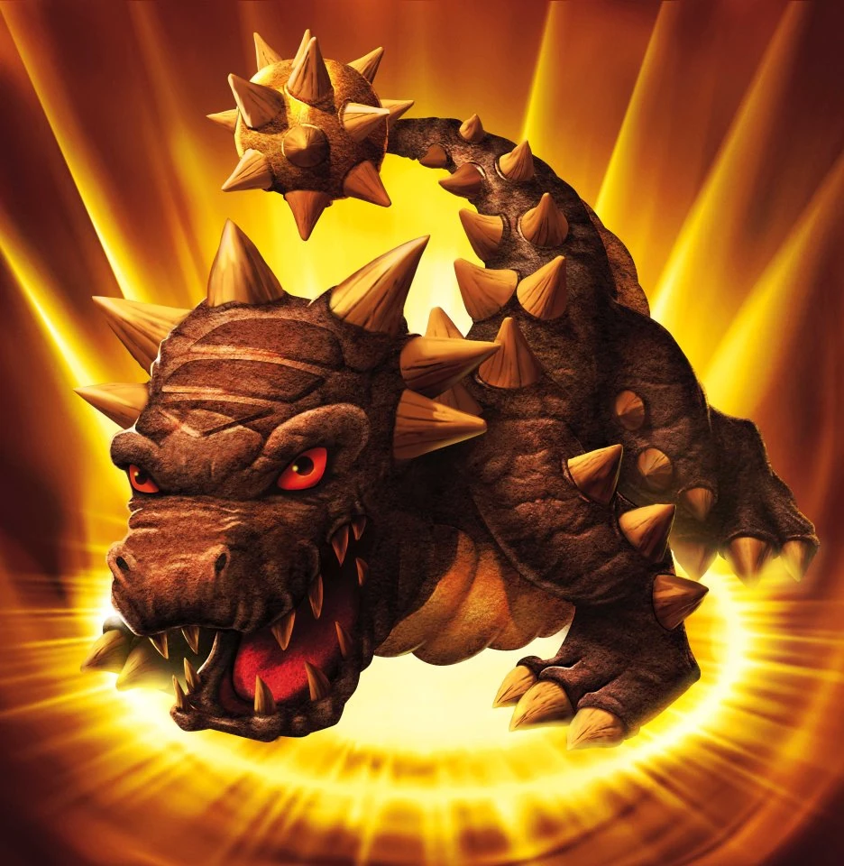
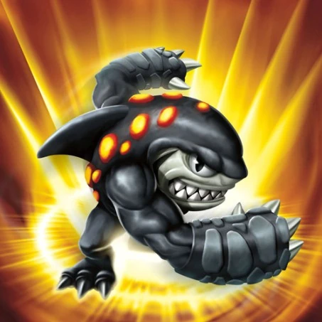
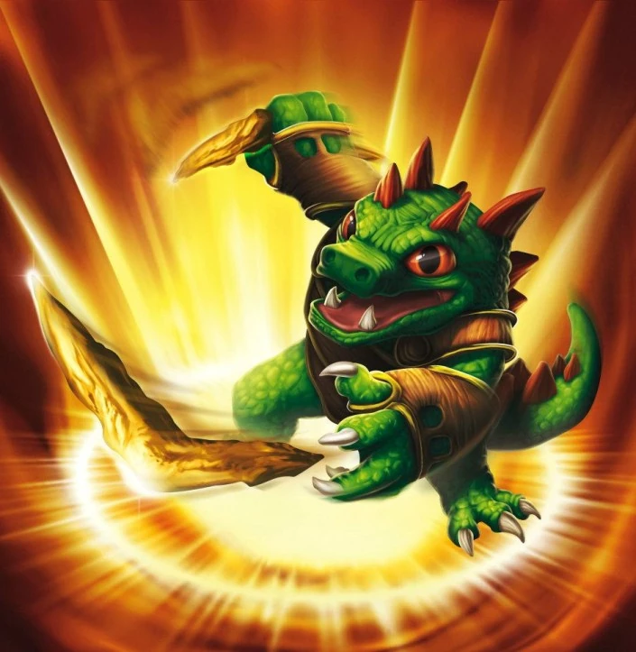
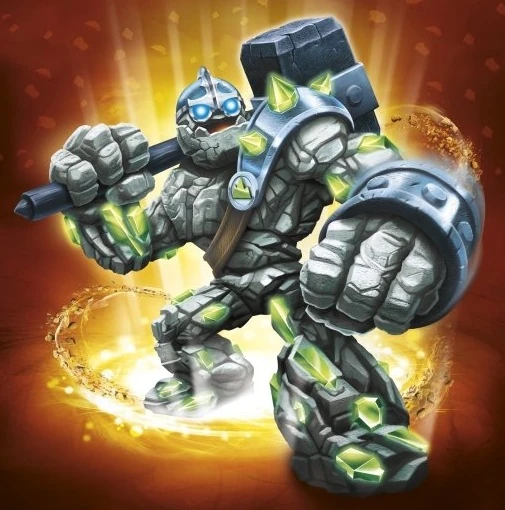
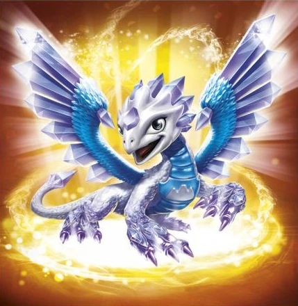
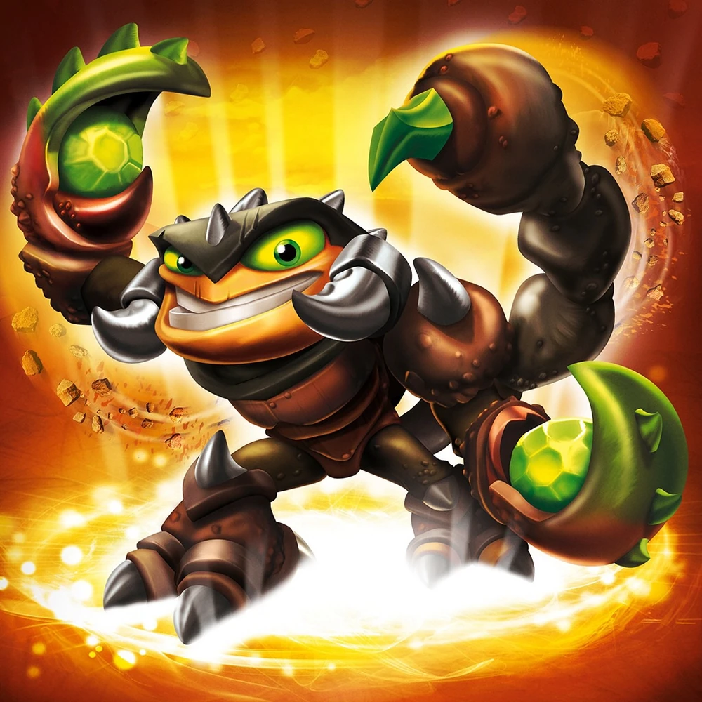
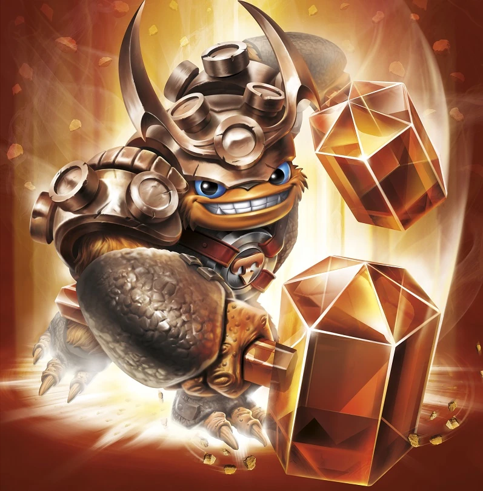
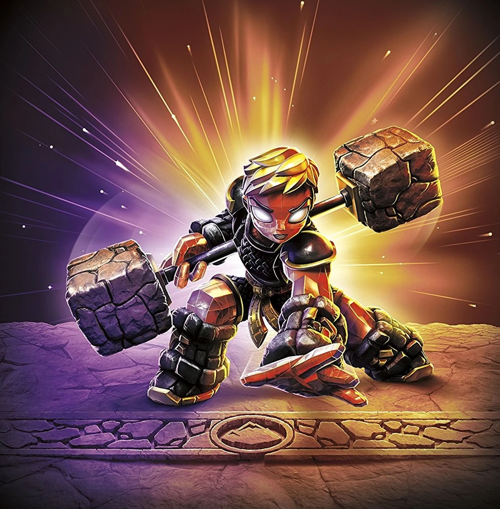
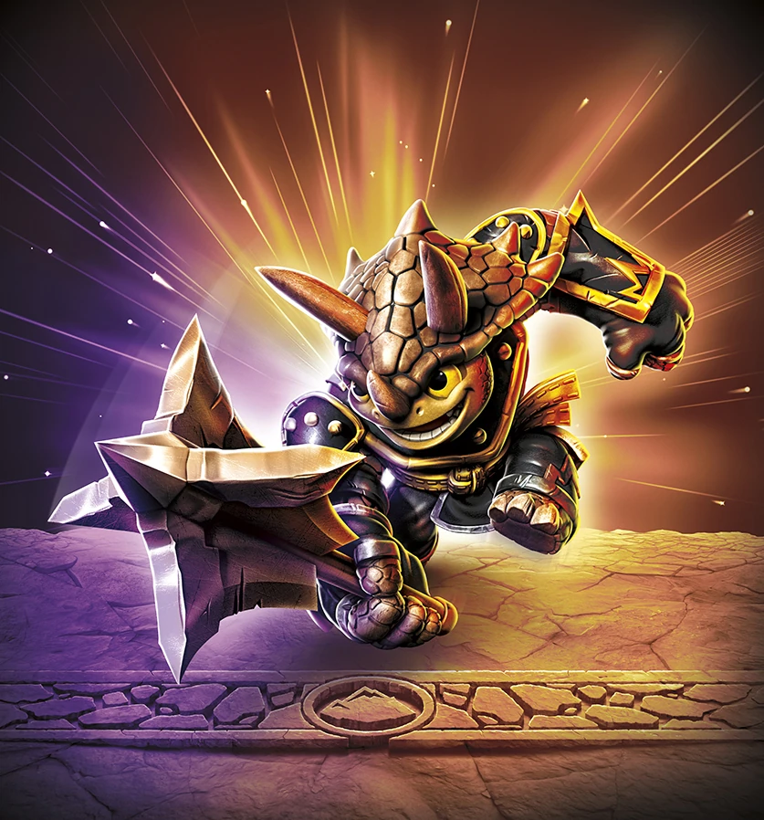

Bash
Bash spent most of his early dragonhood staring into the sky, watching the flying creatures of Skylands soar amongst the clouds. Determined to join them, he learned how to curl himself into a ball and roll with incredible momentum in a vain attempt to take flight. Over the years, his skin hardened, forming a natural protective armor unlike any other creature. He now thunders through Skylands, leaving a wake of destruction against any who threaten it. Despite his thick skin, he still gets very touchy about his inability to fly.

Terrafin
Terrafin hails from The Dirt Seas, where it was common to swim, bathe, and even snorkel beneath the ground. But a powerful explosion in the sky created a blast wave that turned the ocean of sand into a vast sheet of glass, putting an end to Terrafin’s duty as the local lifeguard. Not one to stay idle, the brawny dirt shark found himself training in the art of boxing, and not long after he was local champ. Fighters came from all around to challenge him, but it was a chance meeting with a great Portal Master that led him to give up his title for a greater purpose.

Dino-Rang
For years, Dino-Rang trained to use the weapons of his tribe – earthen boomerangs. His people were skilled hunters in a world far away from the realm of Skylands. As he slept one night, a freak portal suddenly opened beneath him. Unsure of how or why he arrived in Skylands, Dino-Rang set out to explore the world that was suddenly his new home. Eventually becoming a Skylander, he now fights with his own brand of Dino-Justice, while seeking out the fabled Twin Diamond Boomerangs, which he believes could hold the clues to his greater destiny.
Prism Break
Prism Break was once a fearsome Rock Golem who didn’t like to be disturbed. Then, an accidental cave-in left him buried underground. One hundred years later, a mining expedition digging for valuable jewels discovered him by chance with a well-placed blow from a pick axe – something Prism Break doesn’t talk about. After 100 years of solitude, he found that the pressure of the earth had transformed him emotionally as well as physically, turning his crude rocky arms into incredible gems with powerful energy. Grateful for being free of his earthly prison, Prism Break decided to put his new abilities to good use and dedicated himself to protecting Skylands.

Crusher
Crusher knew from the moment he put on his father's mining helmet that his true passion in life was crushing rocks. He was fascinated with rock-lore and traveled all throughout Skylands in search of rare minerals to pulverize with his powerful hand-crafted rock hammer, which is also named Crusher. But along his travels, he discovered that the evil Arkeyan King was also searching for rocks-to melt down into weapons of war. Crusher's fury built up like an avalanche. After all, crushing was his job! So he put aside his life's passion and decided to use his hammer for a greater purpose- crushing Arkeyan Robots.

Flashwing
Flashwing's true origins are a mystery. But her first appearance came when Bash made a wish that he could fly and looked up to see a shooting star streak across the sky and in a valley below. In the centre of the glowing impact crater was a large, brilliant geode - which suddenly cracked open to reveal Flashwing. Bash may not have soared that day, but his heart sure did, because Flashwing was beautiful... and lethal. As soon as Bash stepped closer, the gem dragon turned towards him. Not knowing if he was friend or foe, she blasted him off of the cliff with a full force laser pulse from her tail! Perhaps Bash flew that day after all.
Doom Stone
Doom Stone was carved from the strongest and purest stone in Skylands, then magically brought to life by a wizard who was rather lazy and wanted someone strong to carry heavy things and perform other tasks around his castle. Doom Stone happily helped, and in his spare time learned the ancient ways of Stone Fighting should he ever need to protect the wizard, who became like a father to him. Sure enough the need arose when the wizard was kidnapped by his evil twin brother in order to steal his spells for himself. Doom Stone wasted no time in using the skills he learned to save his master. Afterward, the wizard knew Doom Stone had a greater calling and introduced him to Master Eon, who made him a Skylander.
Rubble Rouser
Hailing from a race of creatures who ate rock for a living, Rubble Rouser spent most days digging his way through the vastness of Deep Mountain mouthful by mouthful alongside the rest of his people. But Rubble Rouser found he could eat up far more ground with a swing of his hammer or spin of his drill. However, the leaders of his race wanted no part of changing the way they worked. That is, until the evil Rock Lords trapped them deep within the mountain. It was then that Rubble Rouser showed everyone the power of his ways by defeating the Rock Lords with his mighty hammer and drill. Afterward, the leaders encouraged Rubble Rouser to seek out the Skylanders, who readily welcomed him.

Scorp
Scorp was raised in the Salt Flat Islands, an endless flat plain of rock where every day is very hot. To keep themselves entertained, the residents live for the sport of Sting Ball, an extreme game that only the strongest play to become King of Sting -- a title Scorp had won numerous times. During his last championship game, the opposing team cheated by using an enchanted water gem to make it rain. But the spell got out of control and soon a raging thunderstorm flooded the land. Using his powerful claws and incredible agility, Scorp bravely battled the rising waters to retrieve the gem and hurl it far into the clouds, breaking the spell and saving everyone. Seeing how his abilities could be used for more than sport, Scorp soon sought out and joined the Skylanders.
Slobber Tooth
Having been asleep for thousands of years, Slobber Tooth was awakened by the fiery eruption of two volcanic islands crashing together. Immediately sought out by Kaos to become one of his minions, Slobber Tooth was promised great power. But the gruff and headstrong fighter chose to follow his own path instead. For this, Kaos attacked his ancient petrified homeland. As the only one who could protect his hibernating race, Slobber Tooth fought tooth and tail against Kaos and his minions, ultimately driving them away. For his heroism, Master Eon asked Slobber Tooth to join the Skylanders, where he could continue defending Skylands against the evil Kaos.

Wallop
For generations, Wallop’s people used the volcanic lava pits of Mount Scorch to forge the most awesome weapons in all of Skylands. And Wallop was the finest apprentice any of the masters had ever seen. Using hammers in both of his mighty hands, he could tirelessly pound and shape the incredibly hot metal into the sharpest swords or the hardest axes. But on the day he was to demonstrate his skills to the masters of his craft, a fierce fire viper awoke from his deep sleep in the belly of the volcano. The huge snake erupted forth, attacking Wallop’s village. But, bravely charging the beast with his two massive hammers, Wallop was able to bring down the creature and save his village. Now with his Traptanium-Infused Hammers, he fights with the Skylanders to protect the lands from any evil that rises to attack!
Head Rush
Head Rush was raised in a small village that had fallen under the spell of a powerful Harvest Sphinx, who forced the frightened villagers to plow the vast fields of golden grass for his own benefit. Although there were many villagers, no individual was brave enough to confront the Sphinx and put an end to its rule. But Head Rush believed there was a chance to fight back if she could somehow inspire her people to stand together. Charging through her village, Head Rush shouted a mighty yodel that woke the villagers from their spell! With the village behind her, she then led the charge to drive the Sphinx from the island for good. For her leadership and bravery, she was made part of the Trap Team, where she uses her giant Traptanium Horns to take charge of evil!
Rocky Roll
Rocky was a rock digger who wanted to make a difference, and Roll was a boulder that wanted to see the world. The two of them had known each other since they were young and in mining school together. They had shared the same goal – making the sacred journey to Peek’s Peak, where it was said that one’s destiny reveals itself. But time went on, and it wasn’t until many years later that they found each other traveling the same path towards the mythical peak. The connection that was established years before had finally taken shape, and the two realized they were meant to journey far and wide together – as Rocky Roll. After several adventures together, they met Master Eon by chance, who recognized that their connection was special. Now as an awesome Skylander duo, Rocky Roll will crush anything that threatens Skylands!
Fist Bump
Fist Bump had long been the sleeping protector of the Bubbling Bamboo Forest, but awoke from a long hibernation when a horde of nasty purple Greebles arrived with gigantic rock-smashing machines. Intent on building a new base, their machines wreaked havoc – chewing up the land and spitting out billowing clouds of smoke into the enchanted air. Seeing this, Fist Bump was furious. Using his enormous stone fists, he hammered the ground with all his strength, creating a massive earthquake that sent huge shockwaves towards the Greeble camp. This reduced the machines to mere scrap and sent the Greebles running off in a panic. The act of bravery caught the attention of Terrafin, who brought Fist Bump to meet Master Eon. Now as a Skylander, Fist Bump makes evil quake wherever he goes!
Smash Hit
Smash Hit came from a long line of Warsupials - a rare species widely renowned for their skills in combat. But in more peaceful times, his people were responsible for locating and demolishing any remaining artifacts from the Arkeyan Empire that were deemed too dangerous to leave standing. Smash Hit liked his job because it allowed him to do what he loved most - break things! He was so skillful with his wrecking ball that he could single-handedly dismantle an entire Arkeyan Conquertron in under an hour and still have time for a snack. When Master Eon noticed his skill, he enlisted the talented Warsupial into a new wrecking crew he was forming to take on Kaos - the SuperChargers!
Shark Shooter Terrafin
Shark Shooter Terrafin is the SuperChargers counterpart of Terrafin in Skylanders Superchargers. His signature vehicle is the Shark Tank.

Barbella
Barbella was the best fitness trainer in all of Skylands. Not only did she possess otherworldly strength, she was also a firm believer that a healthy diet and exercise led to true happiness. With such a positive message to spread, Barbella decided to open her own fitness center called “Flex-a-lot”, where she hoped to instill good eating and workout habits with all of her patrons. But one day, the gelatinous villain known as The Gulper destroyed her gym, and it took all of Barbella’s strength to keep it from collapsing while everyone fled to safety. It was then that Barbella realized that bad guys were more hazardous to your health than anything else, so she began to train in the ways of the Sentinel, where she quickly became one of the greatest masters in the world!

Tri-Tip
Long before he became a Sensei, Tri-Tip wandered Skylands searching for the mythical Warping Walnut Tree, rumored to never be at the same place long before moving to a new location. After many years, he found the tree - and just before it vanished once again, he took from it a Golden Walnut, which was said to reveal life’s purpose to those who could open it. But to his dismay, the enchanted walnut could not be cracked no matter how hard he struck it with his thick head. Realizing that only a weapon of immense power could crack the magical shell, and not his head, Tri-Tip forged a mighty mace and trained with the greatest warriors to become the ultimate Master of Smashing. But on the day when he was finally ready to open the shell, he paused. It was then that Tri-Tip realized his true purpose – one that the unopened walnut had been teaching him all along. His purpose in life was to use his skills to protect Skylands. He then gifted the unopened walnut to one of his students and left to join the Skylanders.
Golden Queen
History
A wicked queen made entirely of gold and rich beyond her wildest imagination, the aptly named Golden Queen would gladly trade her entire fortune for just a little more. But why trade when you can steal? And that’s what she did. She stole, and stole, and stole! But no matter how much she took, it was never enough. Through evil sorcery, she even learned how to turn people and objects into solid gold. However, that STILL wasn’t enough. The idea that any amount of treasure in Skylands did not belong to her was infuriating, so she embarked on a quest to take every last cent of it. But she couldn’t do it alone. It was then that she formed the Doom Raiders – the most notorious group of villains ever assembled. As the leader, the Golden Queen promised riches, world domination, and even all-you-can-eat shrimp in order to recruit special criminals to serve her cause. Together, the Doom Raiders terrorized Skylands until Master Eon and the Trap Masters put a stop to them, locking up all of them inside Cloudcracker Prison!
Skylanders Trap Team
After Kaos freed the Doom Raiders from the prison, the Golden Queen stopped her fellow comrades from attacking the evil Portal Master and revealed to him that she had already developed a plan to rule Skylands. Creating an ultimate weapon made from Traptanium, the Queen planned on using it to obtain all of the gold in the world other than ruling Skylands, a plan which irritated Kaos. The Golden Queen was challenged to an 'Evil-Off' by a furious Kaos for leadership of the Doom Raiders and the control over all of Skylands. She easily won the duel by simply turning Kaos into a golden statue and abandoned him in parts unknown, taking Glumshanks with her and the remaining Doom Raiders.
When the green goo needed to supply the Ultimate Weapon was cut off by the Skylanders, the Golden Queen wasn't pleased by Dr. Krankcase's failure but heeded his alternate solution to the problem. To power up their machine, they could use a slice of cheese provided by Krankcase and bury it, then go to 10,000 years into the future when the cheese would become stinky enough to power the Ultimate Weapon. The Golden Queen then ordered both Wolfgang and Dr. Krankcase to find and capture Kaos, as a Portal Master was needed to travel through time. Despite Krankcase's and Wolfgang's defeat at the hands of the Skylanders, Wolfgang was able to send the stinky slice of cheese from 10,000 years in the future to the Golden Queen's doorstep.
With the Ultimate Weapon at full power, she sent a transmission to all of Skylands where she gave her demands like the surrender of the Skylanders, the freedom of the Doom Raiders, all gold in Skylands be delivered to her in tribute, and she reserved the royal right to make an infinite number of rules. To prove a point to all of Skylands, she made an example of those who oppose her by transporting Time Town to the inside of a crystal globe that was held in the palm of her hand. The Skylanders were able to locate the Golden Queen's location, The Golden Desert, which is home to Chompy Worms and undead soldiers under the Queen's servitude. While navigating through the desert with Cali, the Golden Queen became infuriated by the intrusion and turned Cali into a gold statue. The Skylanders were able to drive off the Queen's forces and save Cali, but the Doom Raider escaped. In response to the opposition, the Golden Queen ordered the Ultimate Weapon to be directed to the Skylanders Academy.
To stop the Ultimate Weapon, the Skylanders would have to defeat the Golden Queen. They entered her lair to confront the Queen, who intended to turn the Skylander into a golden trophy. During the heat of the battle, the Golden Queen plunged herself into a pool of gold and grew enormous in size. She soon began chasing after the Skylander and Cali down the stairs leading to her throne, only to be trapped under a stone arch. The Skylanders brought down the arch upon the Queen, defeating her and ending her reign of terror by capturing her.
After her incarceration and Kaos revealing his true plan to the Portal Masters on Earth, she was brought by the heroes to the Great Machine itself for her Villain Quest, provided by a familiar ally, Dr. Noobry. He introduced the Skylanders to the Piggybank-o-matic 3001. He theorized that the missing ingredient is gold, and of course the rehabilitated queen knows all about the valuable element. Noobry was grateful for her arrival, and she activated the swine gold dispenser, being rewarded by the Mabu with a new outfit and the ability to activate the Piggybank-o-matics throughout the level.
Skylanders Superchargers
The Golden Queen reappears as a playable racer equipped with her own vehicle, the Glitter Glider. When bested in her Boss Pursuit, the player will be able to race as the Golden Queen.
Skylanders Imaginators
During her rehabilitation, Master Eon gave the Golden Queen and other villains a choice – either remain imprisoned in the newly-rebuilt Cloudcracker Prison or become Skylander Senseis, teaching a new generation of Imaginators their formidable battle skills as well as how to stay clear of a life of crime. The villains accepted the deal but first had to prove themselves by re-arranging all the books in the Academy's library, a task which took almost two years, and much to the Queen’s dismay, had nothing to do with gold. But this gave her an opportunity to rethink her insatiable desire for treasure and that maybe there is more to life than stealing. She now trains the Sorcerer Class and considers herself mostly reformed.